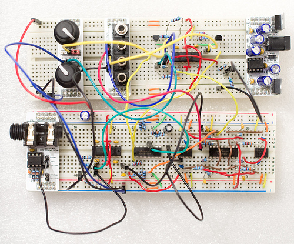
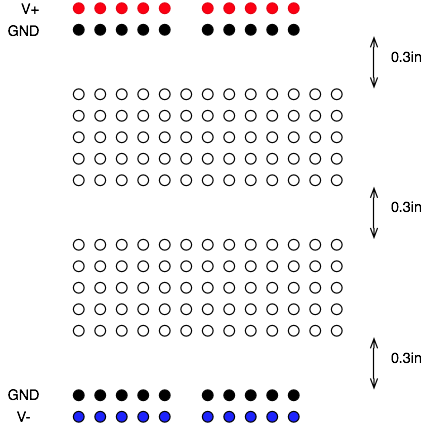
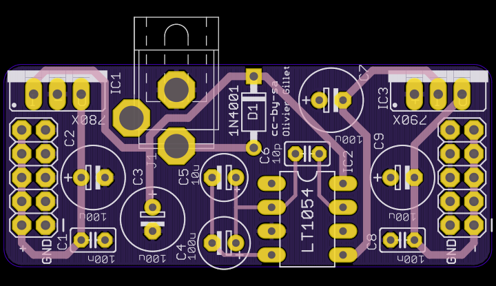
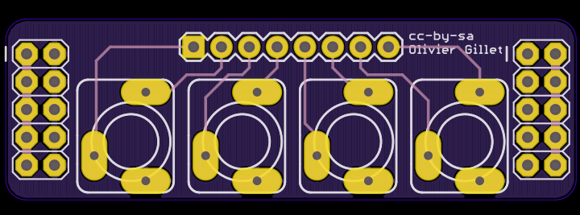
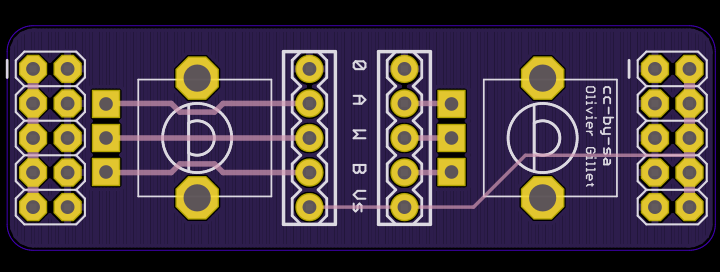
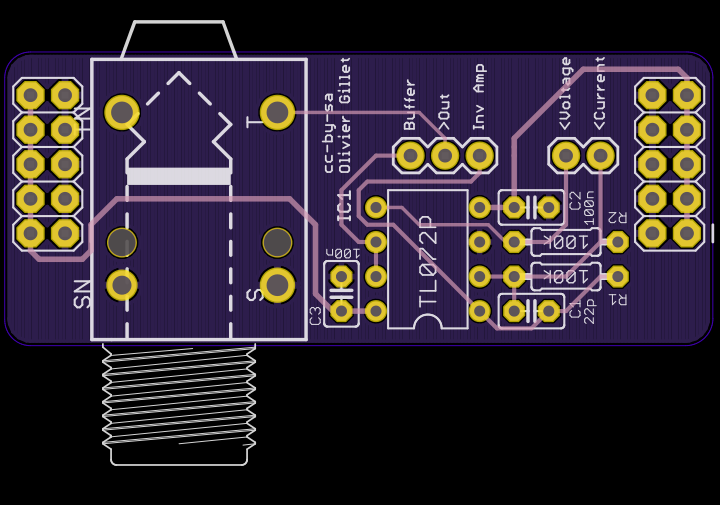

At Mutable Instruments we very often work with solderless breadboards to prototype audio circuits, and we have designed a collection of small modules that "ride" on top of breadboards to make our lives easier during those long hours tweaking circuits.
Over the past years, our list of breadboarding pet peeves included:
- The jack connector that appeared to fit well, but silently pops out after hours of use causing numerous WTF?.
- The PCB-mounted pot that appeared to fit well, but suddenly jumped out and tried to hit our eyes.
- The pain of breadboarding over and over again the same TL072 amp stage or buffer.
- Messy power supply wires which were never long enough.
- WTFs because of the wire (dis)connecting the lower and upper row of GND.
We've tried to address those issues with the following modules. They work for most of the breadboards in use here, but not all, so if you plan to get one, check that it matches your breadboard size too!

This also shows you which convention is used for the rails at the top/bottom of the board. From top to bottom: positive supply, ground, ground, negative supply.
+/- 5V (or more) Power supply

This dual supply based on the LT1054 DC converter can deliver up to 1A on the positive rail (OK, 1A is a bit unrealistic, it'll get very warm for such a current), and up to 100mA on the negative rail. It takes as an input a DC voltage from a standard DC wall-wart with a center-positive connector (labelled as + o) - on the device). You can solder 7805 / 7905 regulators to get +/-5 V, in which case the input voltage must exceed 7.5V to give enough headroom to the regulators. You can also use 7808 / 7908 regulators to get +/- 8V, in which case the input voltage must exceed 11V. Beware! The LT1054 does not tolerate input voltages above 15V. It would be risky, but possible, to get +/- 12V.
Connectors for 3.5mm jacks

This board provides connections for four 3.5mm jack connectors into a standard header. We use it to interface our prototypes with an Eurorack modular - this is great for generating plenty of interesting test signals with LFOs and envelopes! For each connector, two pins are available: one connected to the tip (signal in/out), and one used for providing a signal when no jack is plugged - so you can normal a value into an unplugged input.
Potentiometers

This board consists of two potentiometers; with their 3 terminals (A, Wiper, B) accessible through headers. You can easily insert jumpers to ground the lower end of the potentiometer; and to connect the upper end of the potentiometer to the positive supply voltage.
Audio output

This board hosts a 6.35mm mono jack connector, and an op-amp providing both a (non-inverting) buffer and an inverting amplifier stage. 4 configurations are available:
- Connect a cable from your circuit to >Out. The corresponding voltage is directly sent to the audio jack.
- Connect a cable from your circuit to >Voltage, and add a jumper between Buffer and >Out. The corresponding voltage is buffered and sent to the audio jack.
- Connect a cable from your circuit to >Voltage, and add a jumper between Inv Amp and >Out. The corresponding voltage is inverted and sent to the audio jack. Note that the TL072 is not the best buffer out there, so we highly recommend you to use this configuration if you don't care about the phase of your output signal.
- Connect a cable from your circuit to >Current, and add a jumper between Inv Amp and >Out. The corresponding current is converted into a voltage (with a gain of 100kOhm). This allows the TL072 on the board to be used as the last current->voltage conversion step in signal processing chains involving OTAs or VCA chips which usually have a current output, rather than a voltage output.
Schematics and layout
BOM
License
cc-by-sa-3.0.